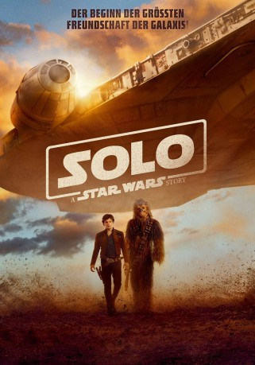

gesehen am 29.10.2018
gesehen am 29.10.2018 
 IMDB-Wertung: 7.0 / 10
IMDB-Wertung: 7.0 / 10  Tomatometer: 70
Tomatometer: 70  Metascore:
Metascore: 
Im Mittelpunkt steht der junge Schmuggler Han Solo (Alden Ehrenreich), dessen erstes großes Abenteuer gezeigt wird. Solo ist von der Flugakademie geworfen worden, weil er seinen eigenen Kopf hat - eine Eigenschaft, die er auch anschließend nicht verliert. Sein Mentor, der zwielichtige Gangster Tobias Beckett (Woody Harrelson), schickt ihn auf eine wichtige Mission. Begleitet wird Solo unter anderem von seinem neuen, treuen Freund Chewbacca (Joonas Suotamo), von Qi'Ra (Emilia Clarke), die ihn kennt wie kein anderer - und von Lando Calrissian (Donald Glover).
Jahr: 2018
Dauer: 134 Minuten
FSK: 12
Land: USA Studio: Walt Disney Studios Motion PicturesTonspuren: DD5.1 - ,
Untertitel: Deutsch, Englisch,
Auflösung: 1080p (1920x808) Größe: 5468 MB
Genre: Action, Sci-Fi, Abenteuer, Fantasy
Regisseur:  Ron Howard
Ron Howard
Drehbuch: Jonathan Kasdan, Lawrence Kasdan, George Lucas
Soundtrack: John Powell
Darsteller:
Datei: X:\7+mehr(A-Z)\Star Wars\Solo A Star Wars Story (2018, FSK12, 1920x808) 3D.mkv seit 20.09.2018
Festplatte: HD Collection-7+mehr(A-Z)+Person
 Es gibt insgesamt 18 Filme in der Gruppe '7+mehr(A-Z)\Star Wars'
Es gibt insgesamt 18 Filme in der Gruppe '7+mehr(A-Z)\Star Wars'